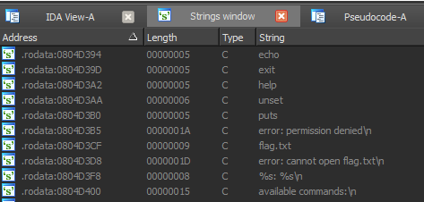

5h311 (reverse 200)
01.11.2014 05:00, by Dil4rd
Category:
Event:
Description: Connect to the service listening at 10.210.8.1:6969 and get the flag.
Solution: We have x86 ELF binary (attached to this writeup). If you open it in disassembler, you will find that it's obfuscated, but strings aren't encrypted:
